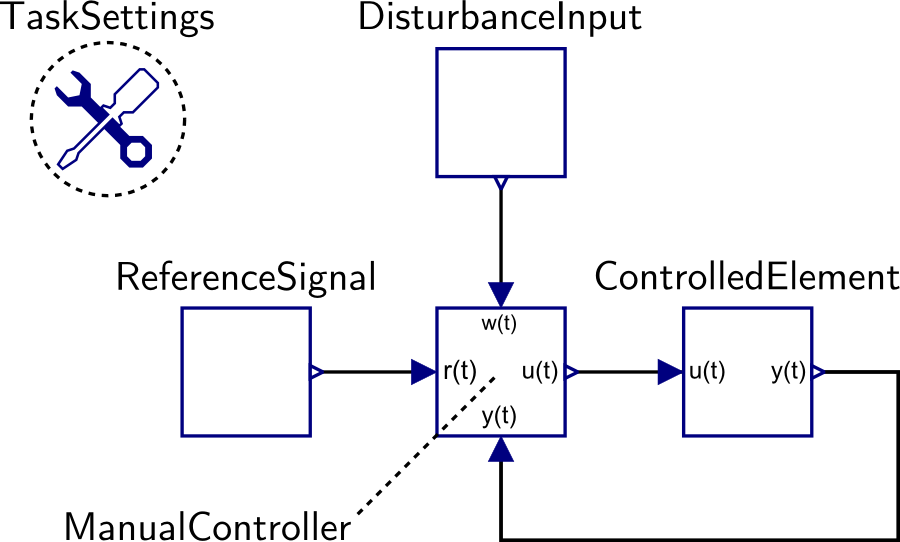

A tracking task model should have the standard form shown above, and it should be stored inside the TrackingTasks package. It includes one block from the ForcingFunctions.ReferenceSignals, ForcingFunctions.DisturbanceInputs, and ControlledElements packages, each connected to the appropriate port of a ManualController block.
An additional component, the TaskSettings block, must be included. This block contains important details of the tracking task: taskDuration is the total length of the task; previewTime is the amount of time in advance to show the target motion; and backgroundVisible determines whether or not pursuit (background) information is shown. The last two parameters are only used in the user experiment, and not in the parameter tuning or simulation functions. The TrackingTasks.FromReferences package provides a few manual tracking tasks from the literature.